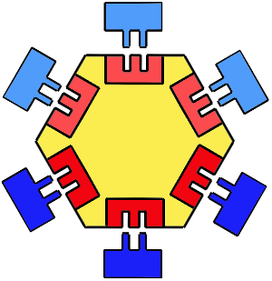
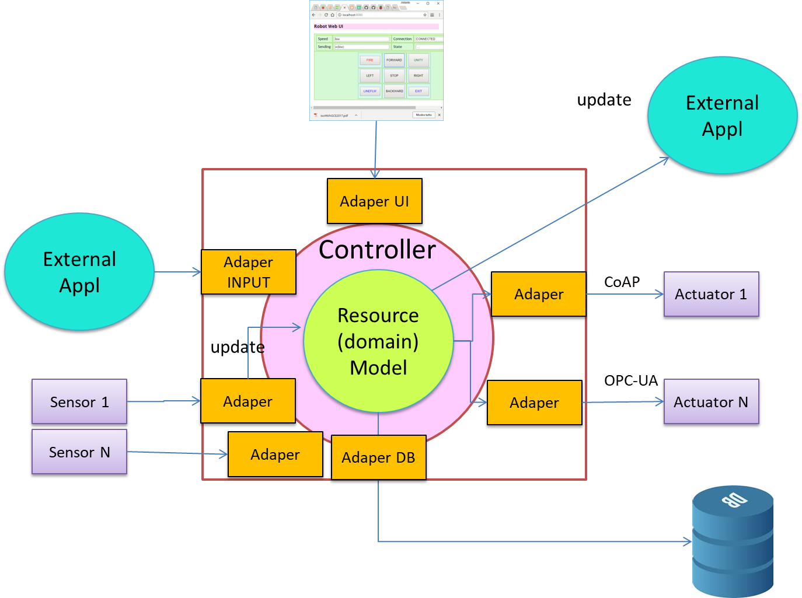
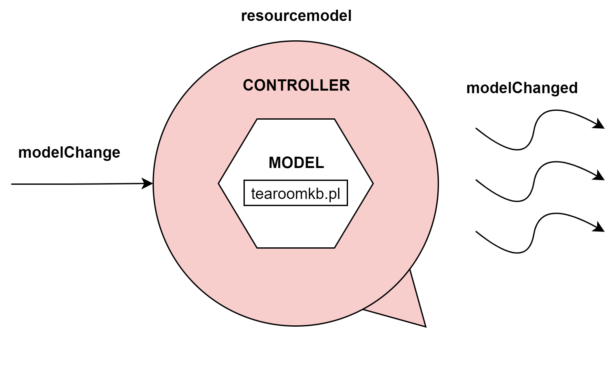
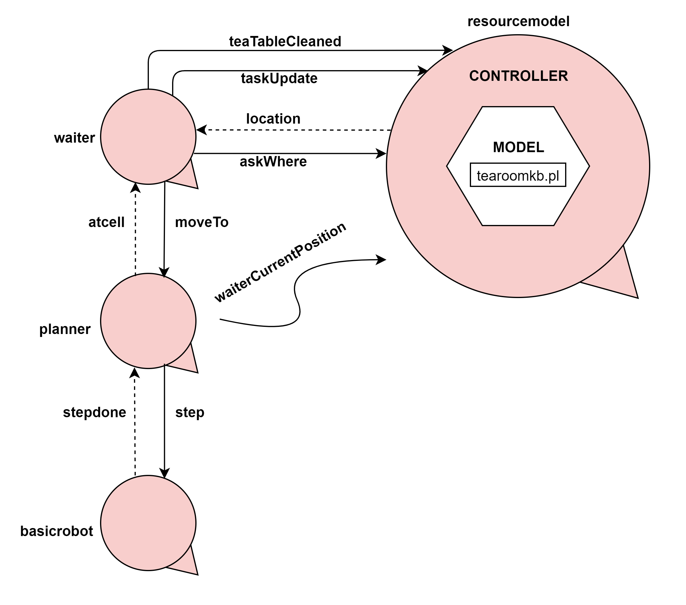
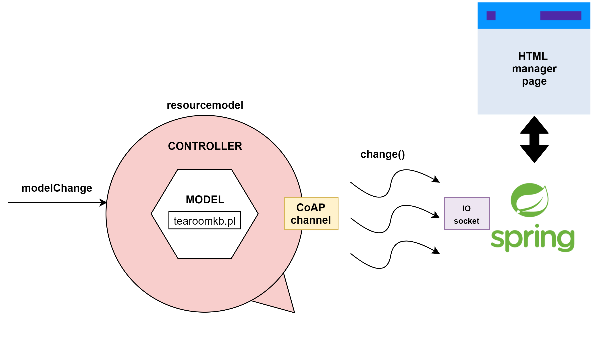
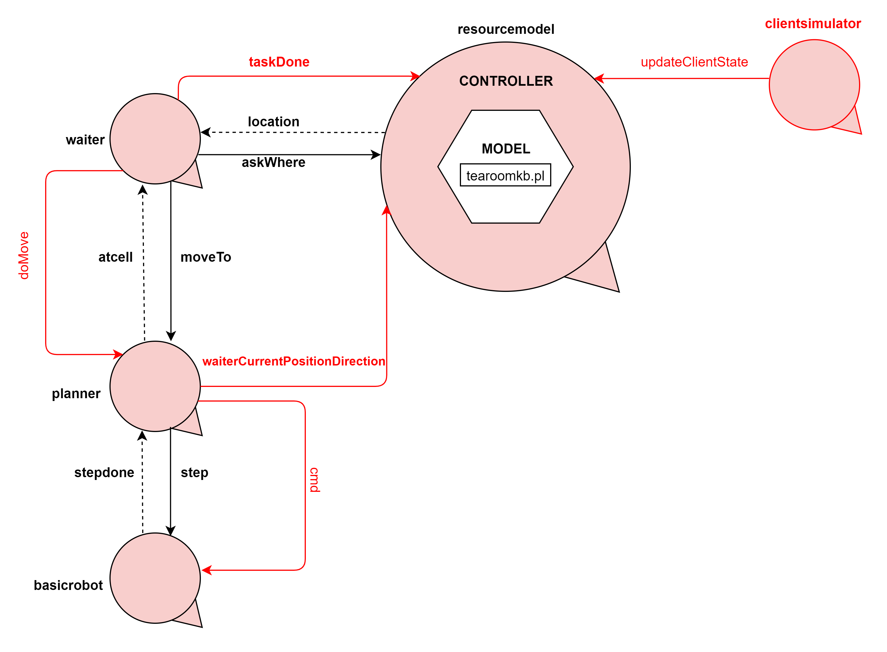

LABORATORIO DI SISTEMI SOFTWARE
Requirements
Questo sprint si occupa di definire lo stato della stanza, introducendo un'architettura esagonale.
Inoltre si inizierà a costruire il pannello di controllo da fornire al manager, tramite il quale si potrà visualizzare lo stato della stanza.
Requirement analysis
Per "stato della stanza" si intenda:

Il principale obiettivo di questa architettura è quello di disaccoppiare la logica core
dell'applicazione dai servizi che essa usa. Ciò permette a differenti servizi di poter essere "plugged
in", ed inoltre di poter eseguire senza questi servizi.
La connessione tra la parte interna e quella esterna del sistema è realizzata tramite
l'astrazione delle porte e la loro controparte implementativa chiamata adattatori .

Viene di seguito riportato il modello formale del sistema definito in fase di analisi dei requisiti.
- Posizione degli elementi nella stanza
- Posizione corrente del waiter
- Attività in cui è impegnato waiter
- Stato dei tavoli
- Identificativo dei clienti attualmente dentro la stanza
- Attività in cui è impegnato il Barman
- Eventuali statistiche del sistema
- ad es, numero di clienti serviti
- La business logic di un'applicazione consiste negli algoritmi essenziali per il suo scopo. Essi implementano i casi d'uso che sono il cuore dell'applicazione.
- I servizi non sono essenziali. Essi possono essere sostituiti senza camibiare lo scopo dell'applicazione. Esempi: accesso a database, interfaccia utente, hardware devices.
- È facile sostituire i servizi con altri che sono più idonei alla luce di nuove esigenze.
System resourcemodel Contextctxresourcemodel ip[host="localhost" port=8010] QActorresourcemodel context ctxresourcemodel{ State s0 initial{//questo attore presenterà tramite l'uso di un //generico meccanismo le informazioni richieste nei //requisiti } }
Problem analysis
Adottando un'architettura esagonale si avrà un attore principale resourcemodel che andrà a gestire quello che è il modello del dominio nell'architettura esagonale.
Già nel precedente sprint era stata impiegata una base di conoscenza (scritta in Prolog) per mantenere alcune informazioni sul sistema, ciò, insieme alle informazioni dello stato della stanza, costituisce il domain model vero e proprio. E il resourcemodel andrà a fare da controller per questa base di conoscenza.
All'arrivo di un generico messaggio modelChange,resourcemodel reagisce emettendo un evento modelChanged
che informa del cambiamento avvenuto.

Viene di seguito riportato il modello formale del sistema definito in fase di analisi del problema.
All'arrivo di un generico messaggio modelChange,
System resourcemodel Dispatch modelChange : modelChange(CHANGE) Event modelChanged : modelChanged(CHANGE) Contextctxresourcemodel ip[host="localhost" port=8010] QActorresourcemodel context ctxresourcemodel{ State s0 initial{ println("STARTING, I will be soon ready to listen to changes!") solve(consult("tearoomkb.pl")) delay 200 } Goto listenToChanges State listenToChanges{ println("LISTENING...") } Transition t0 whenMsg modelChange-> informChanges State informChanges{ println("MODEL has changed...") solve(modelChange) emit modelChanged: modelChange("change") } Goto listenToChanges }
Test plans
Non sono sorte in fase di analisi funzionalità da testare, in quanto questo sprint si occupa unicamente di modificare il precedente
modello introducendo il modello esagonale (completamente espresso con la tecnologia QAK, framework presente nella nostra software house).
Project
Il waiter interagisce ora con il resourcemodel in tre occasioni:
planner interagisce ora con il resourcemodel tramite l'evento waiterCurrentPosition, per aggiornare
la posizione corrente del waiter nella stanza.
La scelta di una interazione ad evento è basata su due considerazioni:

Una descrizione formale di questo modello si può trovare in tearoom.qak
Inoltre, viene introdotta la parte frontend di interazione con il manager, che rappresenta le informazioni elencate nei requisiti.
Questa, implementata tramite il framework Spring, si relaziona con il resource model tramite un canale CoAP,
che viene aggiornato ogniqualvolta avviene un cambio di modello, utilizzando la feature QAK updateResource.

Il main della interfaccia web si può trovare in RobotWeb2020Application (accessibile da localhost:7001).
- Tramite teaTableCleaned, per notificare il cambiamento di stato del tavolo, dopo averlo pulito.
- Tramite taskUpdate, per notificare il completamento di un task.
- Tramite askWhere, per richiedere la posizione (ottenuta tramite location) di un oggetto nella stanza verso cui si deve spostare il robot.
- Essendo il planner un attore di "supporto" al sistema, è stato preferito non dargli la responsabilità di interagire direttamente con il modello.
- La possibilità di aggiornare la posizione corrente del waiter tramite un evento può risultare utile nel momento in cui l'attore venga spostato in una posizione esterna al sistema.
Testing
Il testing si può svolgere tramite il confronto fra il comportamento atteso (descritto nei requisiti) e quello osservato dalla
interfaccia web realizzata per il manager (RobotWeb2020Application),
supportato dall'infrastruttura software modellata in tearoom.qak.
Sprint review del 17/7/2020
-
Rispetto alla demo presentata il 17/7/2020 è emerso necessario aggiungere alla interfaccia grafica le funzionalità di:
- Far progredire manualmente gli stati del
clientsimulator tramite un tasto. - Aggiungere un controllo manuale del robot.
Sprint retrospective del 17/7/2020
Considerazioni sul cliente
Nell'aggiungere i tasti per simulare il comportamento dei clienti, è sorta l'utilità di tracciare il loro stato corrente all'interno della base di conoscenza.
La pressione del tasto sulla interfaccia web genera un evento che viene recepito dal clientsimulator , il quale notifica tramite updateClientState la volontà del cambiare lo stato del cliente.
Sebbene ora sia l'interfaccia web (per necessità di demo) a propagare i cambiamenti di stato del cliente, in un futuro questa logica potrebbe essere riutilizzata nel prodotto finale tramite delle interfacce come tablet o simili.
Dalclientsimulator si potrà infatti rimuovere la parte relativa al "comportamento autonomo" di un cliente (necessaria ora per simulare il sistema) lasciando soltanto la logica necessaria ad interfacciare un cliente reale con il resto del sistema, ovvero comunicare al modello le attività di un cliente.
Revisione Dopo un confronto con il committente sono stati attuati i seguenti cambiamenti:
Quando comandiamo il movimento del robot assumiamo che basicrobot (già fornito dalla nostra software-house) compia i comandi con successo.
Sebbene ora sia l'interfaccia web (per necessità di demo) a propagare i cambiamenti di stato del cliente, in un futuro questa logica potrebbe essere riutilizzata nel prodotto finale tramite delle interfacce come tablet o simili.
Dal
Revisione Dopo un confronto con il committente sono stati attuati i seguenti cambiamenti:
- Il modello è stato pensato seguendo un ragionamento a macrostati: si prevede che il
waiter comunichi al modello la fine di ogni task(reach, convoy,..), tramite taskDone. - Data la considerazione precedente, dobbiamo quindi prevedere che il modello mantenga persistentemente il task corrente del robot.
- Le uniche azioni consentite al
robot sono quelle previste dettate dai cambiamenti di stato del modello. - Il cambiamento di stato del modello determina il nuovo task del waiter.
- Il
planner fornisce al modello posizione e direzione corrente del robot ogni volta che una di esse o entrambe cambiano tramite waiterCurrentPositionDirection.